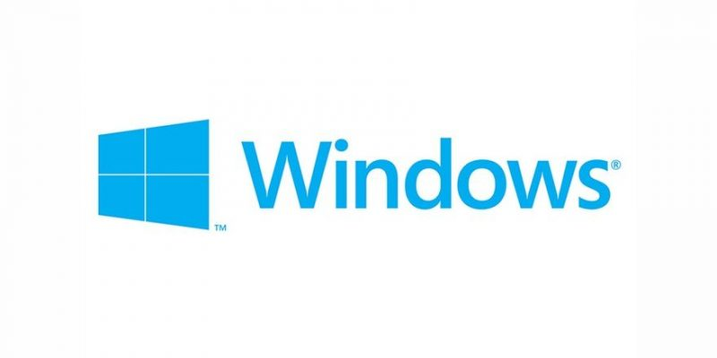

Carrera Profesional
El 4 de abril de 1975, siendo aún estudiante en la Universidad de Harvard crea la empresa de software Microsoft. En 1976 abandonó la universidad y se trasladó a Albuquerque, sede de MITS, para pactar con esa empresa la cesión del 50 % del lenguaje para computadoras Basic. Al año siguiente, se enteró del éxito de la empresa Apple y de que necesitaban un intérprete de Basic.
En 1980, se reunió con representantes de IBM en Seattle. Ellos querían contar con el sistema operativo CP/M. Él les comento de la existencia de una versión adaptada llamada QDOS u 86DOS, comprometiéndose a conseguir una licencia no exclusiva a fin de adaptarla. Con ello, consiguió venderles la idea del sistema operativo MS-DOS, sin contar con esta, comprando la 86DOS a muy bajo precio al joven programador Tim Paterson. IBM necesitaba ese sistema operativo para competir con Apple, razón por la cual la negociación fue flexible. Microsoft quiso los derechos de licencia, mantenimiento, e incluso la facultad de vender el DOS a otras compañías.
Consciente de la importancia del entorno gráfico que había mostrado Apple en su ordenador Lisa, se propuso conseguir también el entorno gráfico y el "ratón" para operarlo. Mientras, Steve Jobs, fundador de Apple, iniciaba el desarrollo del Macintosh, Bill Gates visitó Apple. Ofrecía mejorar sus hojas de cálculo y otros programas. Amenazaba con vender su material informático a IBM, con lo que obtuvo una alianza Apple-Microsoft.[cita requerida] Microsoft obtuvo legalmente la tecnología del entorno gráfico y del ratón, y sacó al mercado Microsoft Windows, como directo competidor de Macintosh.
Desde comienzos de siglo, el sistema operativo Microsoft Windows (en todas sus versiones) se utiliza en la mayor parte de ordenadores personales del planeta.
Un video para comprender mejor la historia de windows posiblemete el mayor logro de Bill Gates